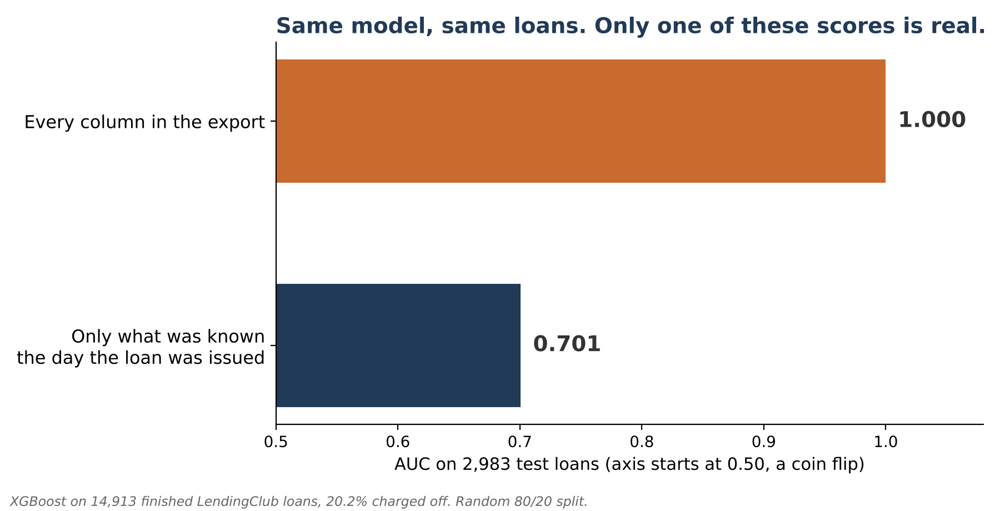
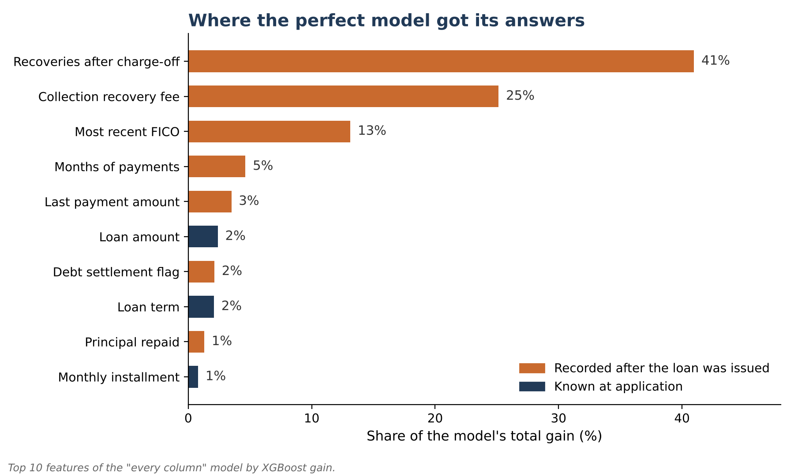
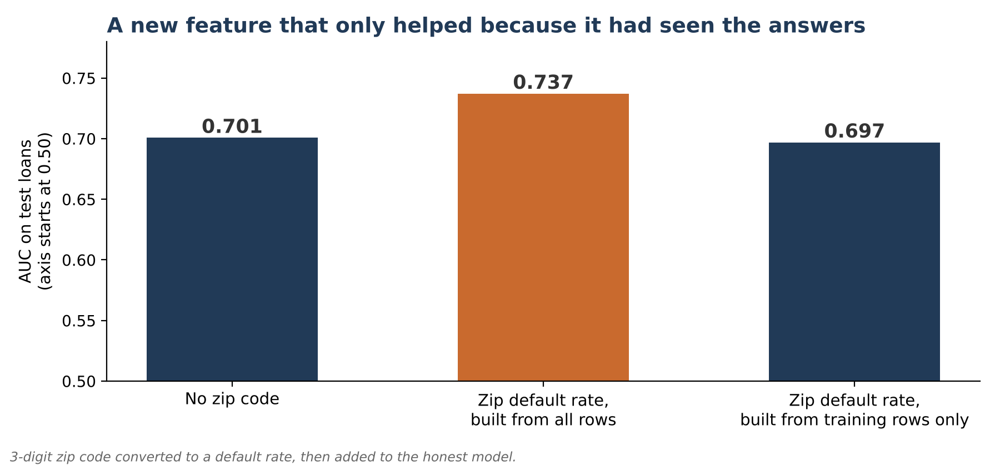

The Model That
Knew the Answer
I built a credit model with a perfect score, on purpose. Here's where its answers came from, how to find a leak like that in your own data, and what the model was really worth once the leak was gone.
A Model with a Perfect Score
I gave a credit model 2,983 LendingClub loans it had never seen, and it ranked every borrower who later defaulted ahead of every borrower who paid. It was right on 99.6% of the loans. It's also completely useless. It would fail on the first application it scored in production, and it would do it quietly, because every test I'd normally run had already said it was perfect.
The model wasn't predicting anything. It was reading answers that had leaked into the data. Data leakage happens when a model trains on information it won't have at the moment it has to make a decision. It rarely looks like an error. It looks like a great result.
The Decision-Day Test
Every leak in this tutorial fails the same test. For each piece of information the model uses, ask whether you would have had it at the moment you made the decision. For a loan, that moment is the day it was issued.
Income, debt-to-income, the FICO score on the application, interest rate, term and credit history pass. Payments received, recoveries, a settlement flag and the borrower's latest FICO pull don't. They were recorded months or years later, and several of them only exist because the loan went bad.
If a value wasn't known on decision day, the model can't use it. That applies to columns, and it also applies to anything you calculate from the data, like averages or encodings.
Imports and Settings
import sys
import numpy as np
import pandas as pd
from sklearn.compose import ColumnTransformer
from sklearn.metrics import accuracy_score, recall_score, roc_auc_score
from sklearn.model_selection import KFold, train_test_split
from sklearn.pipeline import Pipeline
from sklearn.preprocessing import OneHotEncoder
from xgboost import XGBClassifier
SEED = 42
DATA_PATH = sys.argv[1] if len(sys.argv) > 1 else "lendingclub_sample_25000.csv"python leakage_lendingclub.py lendingclub_sample_25000.csv
Install if needed: pip install pandas numpy scikit-learn xgboost
Finished Loans Only
Loans that are still being paid don't have an outcome yet, so I keep only the ones that finished: repaid in full, or charged off. That leaves 14,913 of the 25,000 loans in the sample, and 20.2% of them were charged off.
df = pd.read_csv(DATA_PATH, low_memory=False)
good = df["loan_status"].isin(["Fully Paid", "Does not meet the credit policy. Status:Fully Paid"])
bad = df["loan_status"].isin(["Charged Off", "Does not meet the credit policy. Status:Charged Off"])
df = df[good | bad].copy()
df["charged_off"] = bad[good | bad].astype(int)
TARGET = "charged_off"
issue = pd.to_datetime(df["issue_d"], format="%b-%Y")Two Sets of Features
The first set is the same application-time features I used in the backtesting tutorial. Everything here was known on the day the loan was issued.
df["term_months"] = df["term"].str.extract(r"(\d+)").astype(float)
df["emp_years"] = (df["emp_length"].str.replace("< 1", "0", regex=False)
.str.extract(r"(\d+)").astype(float))
earliest = pd.to_datetime(df["earliest_cr_line"], format="%b-%Y", errors="coerce")
df["credit_history_months"] = ((issue.dt.year - earliest.dt.year) * 12
+ (issue.dt.month - earliest.dt.month))
grade_order = {g: i for i, g in enumerate("ABCDEFG")}
df["grade_num"] = df["grade"].map(grade_order)
df["sub_grade_num"] = df["grade_num"] * 5 + df["sub_grade"].str[1].astype(float)
df["fico"] = (df["fico_range_low"] + df["fico_range_high"]) / 2
df["loan_to_income"] = df["loan_amnt"] / df["annual_inc"].replace(0, np.nan)
AT_ISSUE = [
"loan_amnt", "term_months", "int_rate", "installment", "grade_num",
"sub_grade_num", "emp_years", "annual_inc", "loan_to_income", "dti",
"delinq_2yrs", "fico", "inq_last_6mths", "mths_since_last_delinq",
"open_acc", "pub_rec", "revol_bal", "revol_util", "total_acc",
"mort_acc", "pub_rec_bankruptcies", "credit_history_months",
]
CATEGORICAL = ["home_ownership", "verification_status", "purpose"]The second set is the problem. These fields sit in the same export and look like ordinary columns, but every one of them was recorded after the loan was issued.
last_pay = pd.to_datetime(df["last_pymnt_d"], format="%b-%Y", errors="coerce")
df["months_of_payments"] = ((last_pay.dt.year - issue.dt.year) * 12
+ (last_pay.dt.month - issue.dt.month))
df["last_fico"] = (df["last_fico_range_low"] + df["last_fico_range_high"]) / 2
df["debt_settlement"] = (df["debt_settlement_flag"] == "Y").astype(int)
df["hardship"] = (df["hardship_flag"] == "Y").astype(int)
AFTER_ISSUE = [
"total_pymnt", "total_rec_prncp", "total_rec_int", "total_rec_late_fee",
"recoveries", "collection_recovery_fee", "last_pymnt_amnt",
"months_of_payments", "last_fico", "debt_settlement", "hardship",
]last_fico_range_low and last_fico_range_high sit right beside the application FICO fields and have almost the same names. They hold the borrower's most recent credit pull, often taken after they had stopped paying.
The Every-Column Model vs. the Honest One
Both models are the same XGBoost setup used throughout this series, trained on the same random 80/20 split. The only difference is which columns they're allowed to see.
def make_xgb(numeric):
pre = ColumnTransformer([
("num", "passthrough", numeric),
("cat", OneHotEncoder(handle_unknown="ignore", min_frequency=20), CATEGORICAL),
])
model = XGBClassifier(
n_estimators=300, max_depth=3, learning_rate=0.05, subsample=0.8,
colsample_bytree=0.8, min_child_weight=5, eval_metric="logloss",
random_state=SEED, n_jobs=4,
)
return Pipeline([("pre", pre), ("model", model)])
def score(y, p):
return {"AUC": roc_auc_score(y, p),
"Accuracy": accuracy_score(y, p >= 0.5),
"Recall": recall_score(y, p >= 0.5)}
train, test = train_test_split(df, test_size=0.2, stratify=df[TARGET], random_state=SEED)
print(f"Finished loans: {len(df):,} | charged off: {int(df[TARGET].sum()):,} "
f"({df[TARGET].mean():.1%})")
print(f"Train {len(train):,} | Test {len(test):,}\n")
results = {}
fitted = {}
for name, numeric in [("Everything in the export", AT_ISSUE + AFTER_ISSUE),
("Known at issue only", AT_ISSUE)]:
m = make_xgb(numeric).fit(train[numeric + CATEGORICAL], train[TARGET])
p = m.predict_proba(test[numeric + CATEGORICAL])[:, 1]
results[name] = score(test[TARGET], p)
fitted[name] = (m, numeric)
print(pd.DataFrame(results).T.round(3).to_string(), "\n")
Figure: Same model, same loans. The every-column model scored a perfect 1.000. Restricted to what was known at issue, it scored 0.701. LendingClub sample, 14,913 finished loans.
| Every column | Known at issue only | |
|---|---|---|
| AUC | 1.000 | 0.701 |
| Accuracy | 99.6% | 80.4% |
| Charge-offs caught (cutoff 0.5) | 98.5% | 8.2% |
The honest AUC of 0.701 is a believable number for credit risk on application data alone. The other two rows deserve a second look. 79.8% of these loans were repaid, so 80.4% accuracy is barely better than approving everyone. And at the default 0.5 cutoff the honest model catches only 8.2% of charge-offs. That's the imbalanced-class problem from an earlier tutorial, and it's fixable, but only once you can see the real number.
XGBoost results shift a little between library versions. These came from XGBoost 3.4, scikit-learn 1.9 and pandas 3.0. The pattern, and every conclusion here, is the same.
Finding the Leak
Two quick checks find most leaks. First, score each suspect column on its own. A single field that ranks outcomes well with no model at all is worth a hard look. Second, ask the model which features it relied on.
# Single-column check: how well does each after-issue field rank loans alone?
print("AUC of each after-issue field on its own (test set, direction-free):")
single = {}
for c in AFTER_ISSUE:
x = test[c].fillna(test[c].median())
a = roc_auc_score(test[TARGET], x)
single[c] = max(a, 1 - a)
print(pd.Series(single).sort_values(ascending=False).round(3).to_string(), "\n")
# Feature importance (gain) for the everything model, numeric fields only
m, numeric = fitted["Everything in the export"]
gain = m.named_steps["model"].get_booster().get_score(importance_type="gain")
names = list(m.named_steps["pre"].get_feature_names_out())
imp = pd.Series({names[int(k[1:])].replace("num__", ""): v for k, v in gain.items()})
imp = (imp / imp.sum()).sort_values(ascending=False)
print("Top 10 features by share of total gain (everything model):")
print(imp.head(10).round(3).to_string(), "\n")
Figure: Seven of the ten features the every-column model leaned on most were recorded after the loan was issued. Recoveries and the collection recovery fee alone account for two thirds of its gain.
Recoveries and the collection recovery fee only exist for a loan that has already been charged off. The model didn't learn to predict default. It learned to read the collection file. The most recent FICO is the one to remember: on its own it scores 0.944, and in a real project its name is easy to mistake for the application FICO.
Encoding Before the Split
A perfect score is easy to catch. The leaks that do more damage add a few points and look like progress. Here zip code is replaced by its historical default rate, a common way to use a detailed category. The leaky version calculates those rates from every loan, test loans included. The correct version uses training loans only, with out-of-fold rates inside the training set so no loan sees its own outcome in its feature.
df["zip3"] = df["zip_code"].astype(str).str[:3]
prior = train[TARGET].mean()
def target_encode(fit_rows, apply_rows, k=20):
stats = fit_rows.groupby("zip3")[TARGET].agg(["sum", "count"])
enc = (stats["sum"] + k * prior) / (stats["count"] + k)
return apply_rows["zip3"].map(enc).fillna(prior).values
tr = train.assign(zip3=df.loc[train.index, "zip3"])
te = test.assign(zip3=df.loc[test.index, "zip3"])
everyone = pd.concat([tr, te])
# Leaky: encoding built from ALL rows, test outcomes included
tr_leak = tr.assign(zip_rate=target_encode(everyone, tr))
te_leak = te.assign(zip_rate=target_encode(everyone, te))
# Correct: encoding built from training rows only (out-of-fold on train)
oof = np.zeros(len(tr))
for a, b in KFold(5, shuffle=True, random_state=SEED).split(tr):
oof[b] = target_encode(tr.iloc[a], tr.iloc[b])
tr_ok = tr.assign(zip_rate=oof)
te_ok = te.assign(zip_rate=target_encode(tr, te))
zip_results = {}
for name, a, b in [("Zip rate built from all rows", tr_leak, te_leak),
("Zip rate built from training rows", tr_ok, te_ok)]:
num = AT_ISSUE + ["zip_rate"]
mm = make_xgb(num).fit(a[num + CATEGORICAL], a[TARGET])
zip_results[name] = score(b[TARGET], mm.predict_proba(b[num + CATEGORICAL])[:, 1])
print(pd.DataFrame(zip_results).T.round(3).to_string())
Figure: Built from all rows, the zip feature appears to add 0.036 to the AUC. Built from training rows only, it adds nothing. The whole gain came from test outcomes baked into the feature.
0.737 looks like a real improvement, the kind you'd report in a meeting. Nothing about it looks wrong. The only way to catch it is to build every learned transformation from the training rows alone.
The same rule covers averages used to fill missing values, scaling, feature selection and resampling. For a tree model, filling missing values from all rows usually moves the score very little. Anything built from the target, like this zip rate, can move it a lot.
Time is the other quiet leak. A random split lets the model learn from loans issued after the ones it's tested on. The backtesting tutorial shows what changes when you split by time instead.
A Checklist for Your Own Model
- Date every column. Write down when each value becomes known. Anything known after the decision date comes out.
- Distrust a great score. If the model beats what people in your field usually see, look for the leak before you celebrate.
- Check the top features. If the strongest predictor sounds like a consequence of the outcome (payments, collections, a status change), it probably is.
- Watch for look-alike names. A field like the most recent FICO, next to the FICO at application, is easy to include by mistake.
- Split first. Fill missing values, scale, select features and build target-based encodings from the training rows only.
- Split by time when the data has time in it. Train on the past, test on what came after.
- Test one feature at a time. A single column that ranks outcomes almost perfectly on its own is worth a hard look.
A leak doesn't make a model fail its tests. It makes the model pass them, and then fail on the first day it meets a decision where the answer isn't in the data yet.
Browse all tutorials in Resources.
Back to Resources →